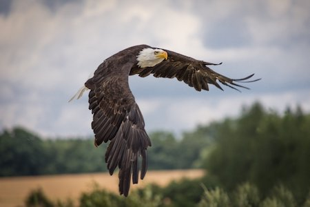

Wow! Based on your answers... You share similarities with the Bald Eagle (Haliaeetus leucocephalus)

The Bald Eagle is a diurnal, extremely majestic and brave creature and that very bravery stands as the symbol of the United States. These beautiful birds will hunt things as small as fish and as large as turtles and snakes. If they see an opportunity to attack any type of prey, they take advantage. With that being said, Bald Eagles tend to be more reserved and will build their nests on top of the tallest tree they can find (super canopy), keeping them and their offspring seperate from the rest of the world. Like the Bald Eagle, you are diurnal, immensely brave, but you tend to keep more to yourself, maybe not letting too many people into your personal life and struggles.
Click on Ceasar to Restart!